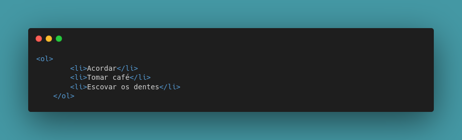
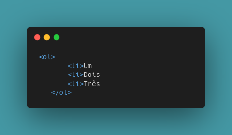
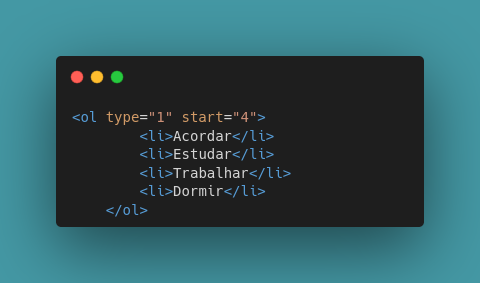
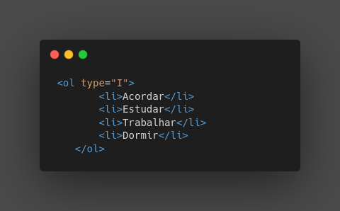
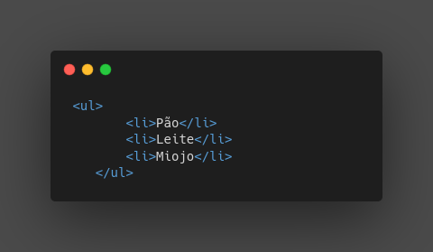
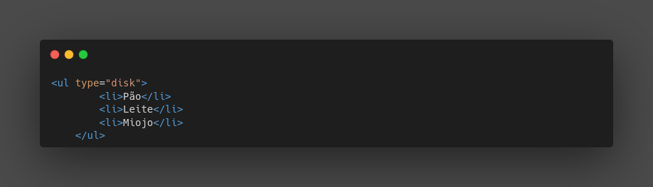
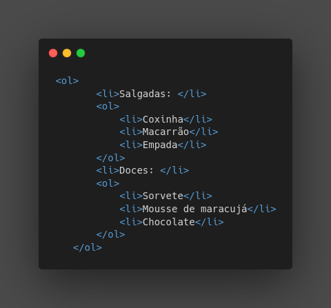
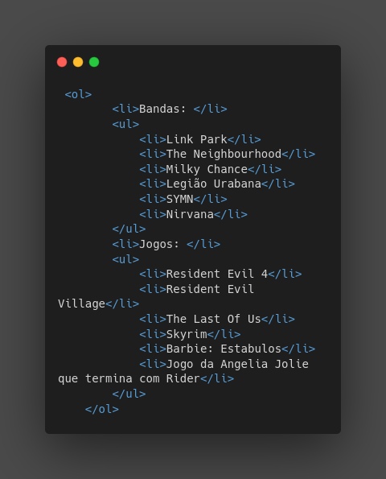

São aquelas que a ordem faz diferença.
Dentro delas, colocamos a tag li - list item - e dentro da li, colocamos os itens que fazem parte da nossa lista.
Exemplo:
Dê uma olhadinha no código:
A tag li deve ser sempre adicionada dentro da tag ol.
Caso você queira adicionar um item que tenha mais prioridade que outro você pode. A numeração automaticamente será ajustada! Se liga no exemplo:
"Vish! Esqueci que tenho que ir ao mercado antes de começar a estudar!"
Observação: Isso foi apenas um exemplo para demonstração. Caso queira adicionar uma coisa que você esqueceu, faça isso direto do código original que automaticamente será atualizado a ordem de numeração. Não é necessário reescrever!
Observação2: Para cada item se usa um li!
Observação3: Apartir da HTML5, o fechamento da li não é mais obrigatório, sendo assim, podemos usa-lá desta forma:
Dê uma olhadinha no código:
Também podemos personalizar nossas listas, usando os parâmentros type, para escolhermos o tipo de lista que queremos: númericas, letras, romanas. E start, para dizermos de onde queremos que nossa lista comece, se queremos que ela comece com 1, com 4, com 10 e etc.
Veja a demonstração do exemplo abaixo usando ordem numerica que se inicia no 4:
Dê uma olhadinha no código:
Veja a demonstração do exemplo abaixo usando ordem romana:
Dê uma olhadinha no código:
Esses são alguns exemplos dos usos fornecidos pelo parâmentro type, sendo: 1 de ordem númerica, A/a ordem com letras e I/i de ordem romana. Os tamanhos das ordens de letras e romanas condizem com o tamanho que será exposto na lista.
As listas não ordenadas são as listas que a sequência não é necessária, elas não possuem sequência.
São utilizadas com a tag ul!
Exemplo:
Dê uma olhadinha no código:
Há também como personalizar listas não ordenadas usando também, o parâmetro type, porém, ele nos dará outros tipos de personalização!
Veja o exemplo abaixo:
Dê uma olhadinha no código:
Percebe-se a diferença de formato dos ícones que ficam nas listas!
Porém, há mais duas formas de íconezinhos que podemos estilizar no parâmetro type: circle e square
Observação: A opção disk adicionada no parâmetro type é o padrão de iconezinho das listas não-ordenadas.
Podemos também juntar as listas: ol e ul, ol dentro de li, ul dentro de li.
Exemplo: Juntando ol dentro de li:
Minhas comidas favoritas:
Juntando ol e ul:
Bandas e Jogos favoritos:
Podemos também estilizar nossas listas mistas, assim como ensinado logo mais acima no arquivo.
Dê uma olhadinha nos códigos: Colocando ol dentro de ol:
Dê uma olhadinha no código: Colocando ul dentro de ol:
